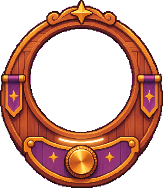
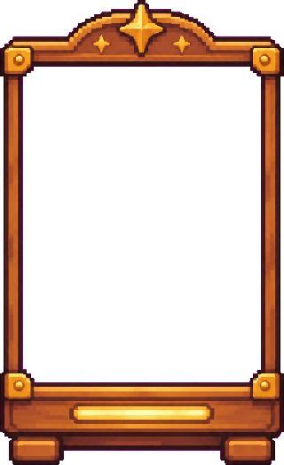

示範 · 網頁上的 Orbit 與 Station
25／50 分鐘都縮短為 20 秒。畫面沿用韌體繪圖與固定示範內容，不代表本人資料，不寫入活動、金幣或經驗值。
滾輪或水平拖曳旋鈕選時間；短按開始，專注中按住 1 秒完成。鍵盤可用左右鍵及空白鍵，也可使用下方按鈕。
示範待命。


25 分鐘待命
本人的裝置綁定
登入後讀取本人裝置綁定。
實體裝置請透過 Android App 以藍牙連線。網頁示範與實際綁定無關；這裡不提供藍牙配對或認領功能。